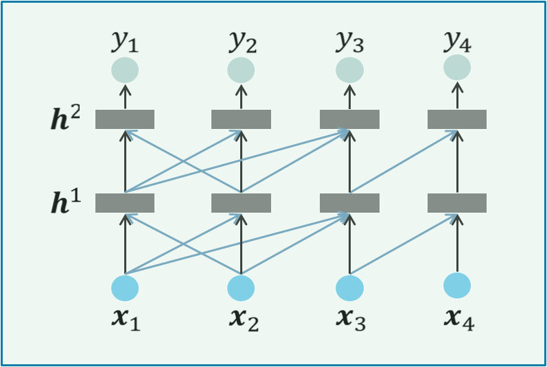
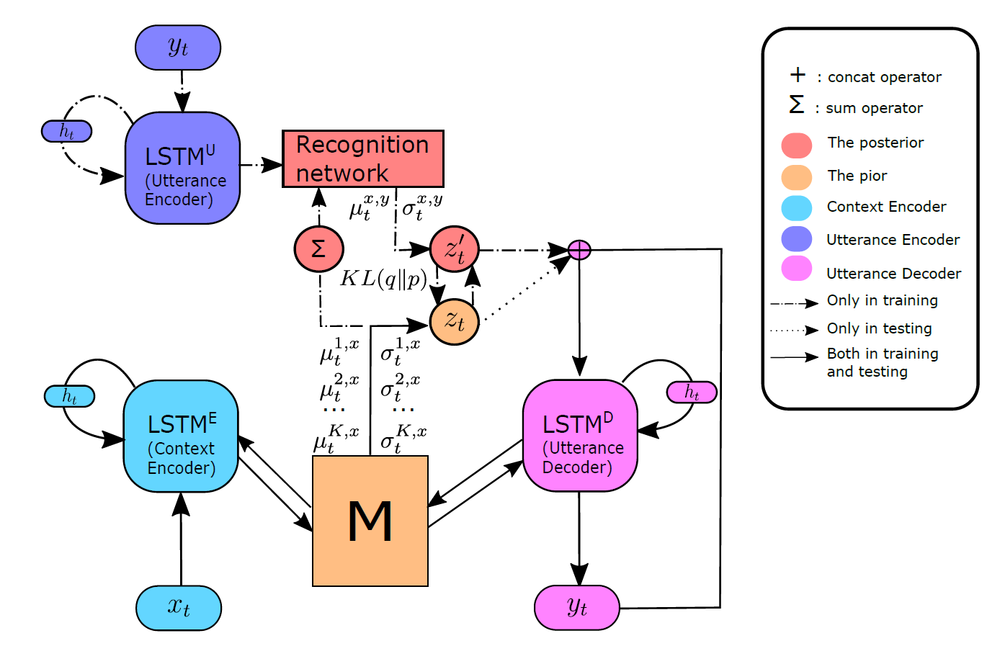
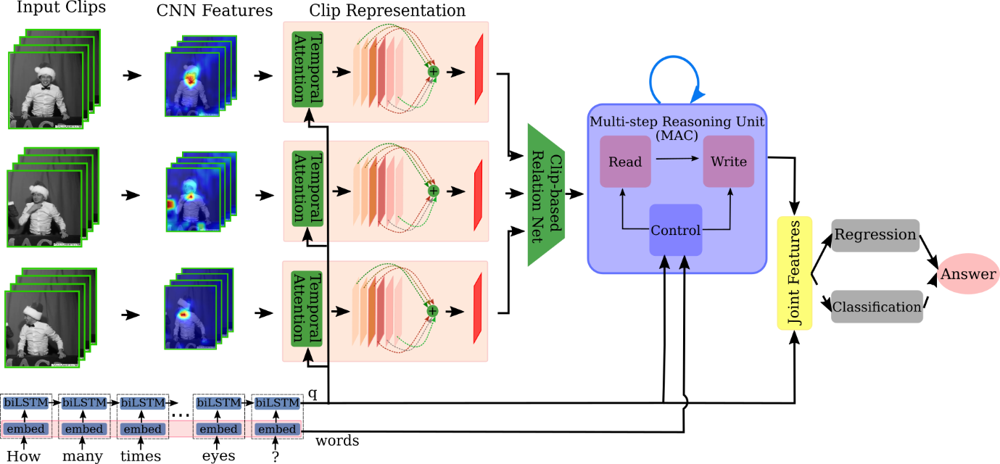
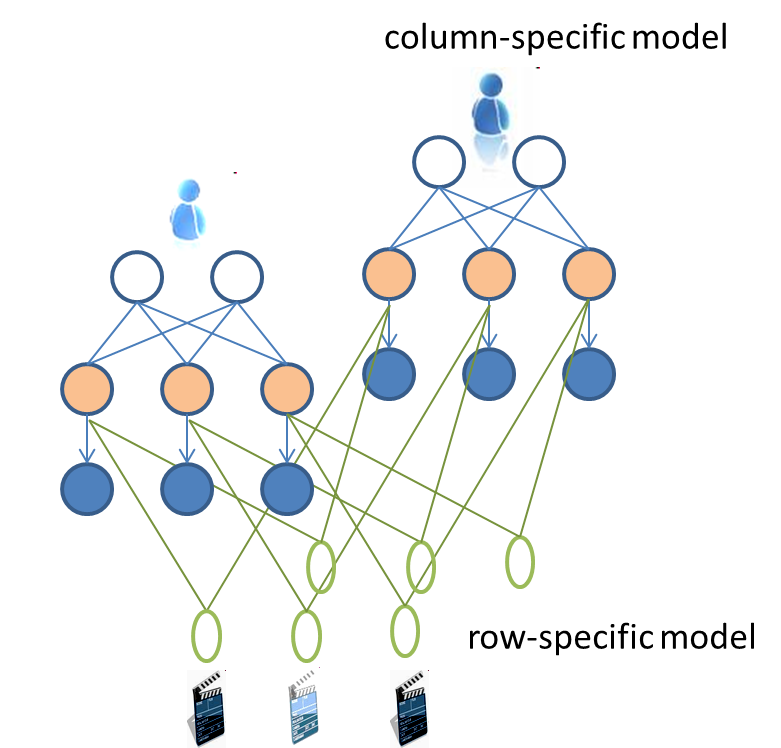
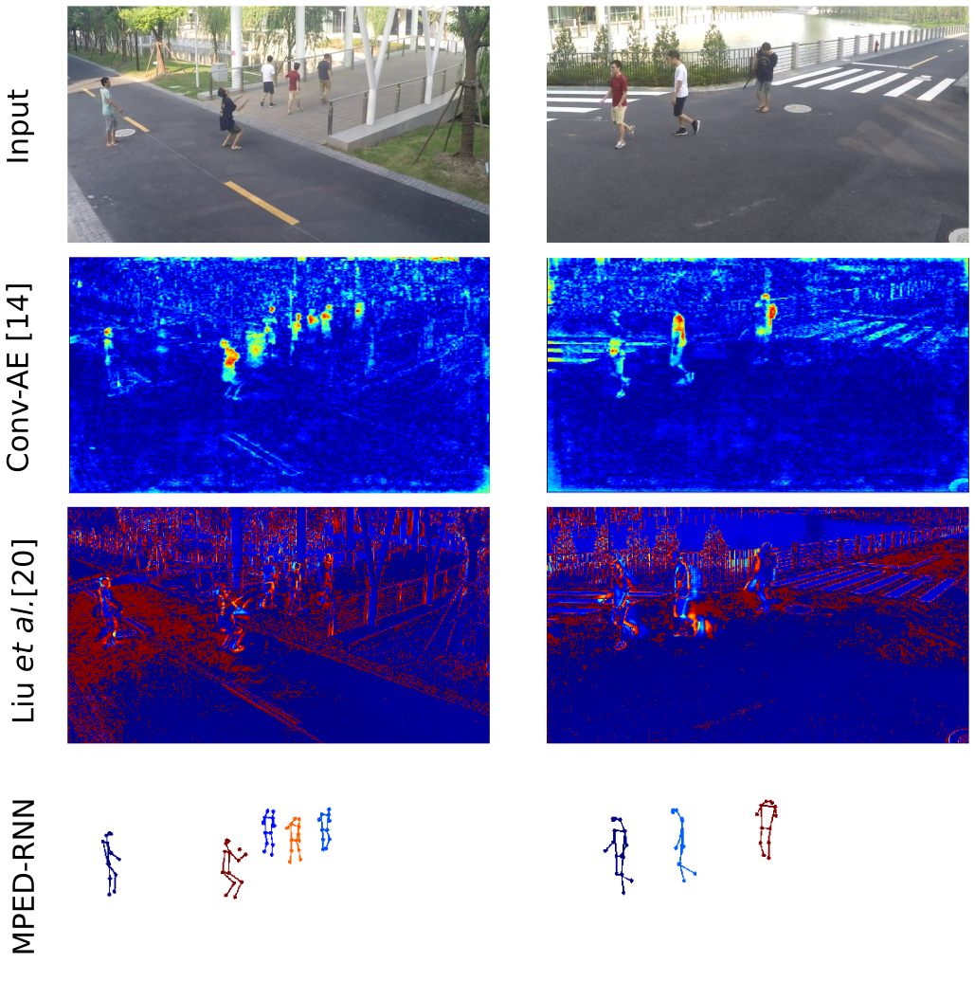
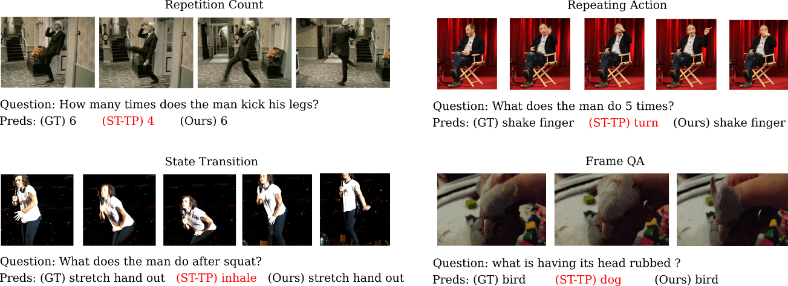
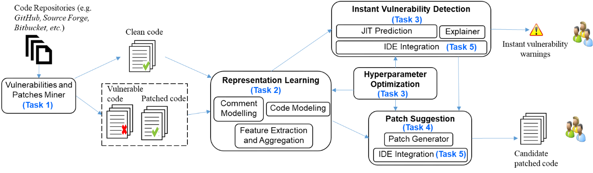
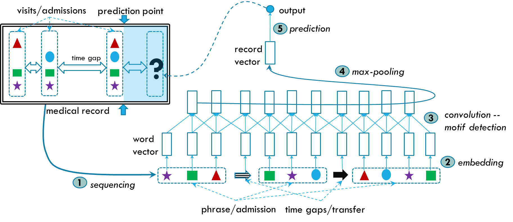
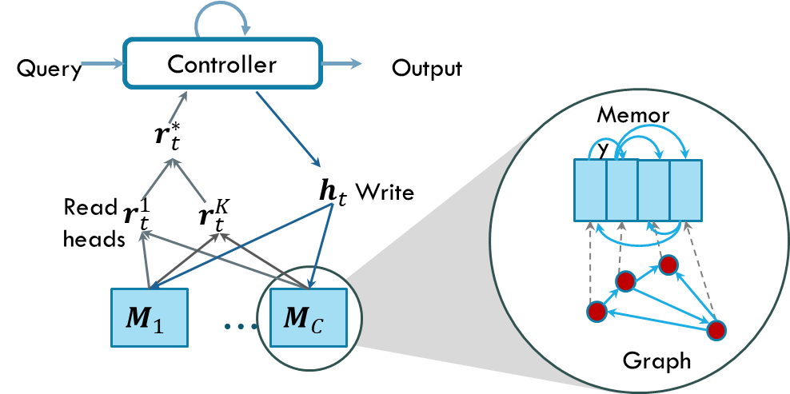

[Source: rdn-consulting]
As
an
approach to general
intelligence, we study new ways for differentiable learning with minimal
human
supervision, towards System 2 capability. Deep Learning achieves the goals through compositional
neural
networks, iterative estimation, and differentiable programming. Our
research
program draws certain inspiration from cognitive neuroscience, fused
with
rigorous probabilistic inference. The ultimate long-term goal is devise
a unified
cognitive architecture that guides the learning and reasoning across
scales in space-time.
The
research program has three broad
aims:
» To design intelligent machines that are competent, scalable and robust.
» To solve important data-rich problems across living, physical and digital domains.
The
Key Focus is on:
Sub-area: New inductive biases
Successes
in machine learning
depend critically on having good priors on inductive biases. In deep
learning,
the strongest prior thus far has been neural architectures built on a
small set
of operators (signal filtering, convolution, recurrence, gating, memory
and
attention). We derive modular networks for regular data such as matrix
and
tensor as well as new data such as graphs and relations. We draw our
architectural inspiration from neuroscience including the columnar
structure of
the neocortex for distributed processing, the thalamus structure for
information routing, working memory for problem solving, and episodic
memory
for integrating information over time.

Column
Networks, as inspired
by the cortical columns, to solve multi-relational learning.
Sub-area: Memory-Augmented Neural Networks
Deep
neural networks excel at
function approximation and pattern recognition but fall short on
manipulating
complex, highly dependent systems, possibly due to the lack of an
external
memory. Memory-Augmented Neural Networks (MANNs), which consist of
neural
networks that interact with an external memory matrix, are promising
solutions.
We design new kinds of MANNs with more robust handling of variability,
less
memorization, and stored programs.

Variational
Memory
Encoder-Decoder, as applied for generating a diverse and coherent
dialog.
We
are concerned about learning
the capability to deduce new knowledge from previously acquired
knowledge in
response to a query. Such behaviours can be demonstrated naturally
using a symbolic
system with a rich set inferential tools, given that the symbols can be
grounded to the sensory world. Deep learning contributes to the
bottom-up
learning of such a reasoning system by resolving the symbol grounding
problem.
Our research aims to build neural architectures that can learn to
exhibit
high-level reasoning functionalities, e.g., answering new questions
over
space-time in a compositional and progressive fashion.

A system for
Video Question
Answering that implements the dual-process theory of reasoning.
Sub-area: Learning with less labels
Learning
with a few explicit
labels is the hallmark of human intelligence. Leveraging unlabelled
data,
either through existing datasets, or through self-exploration, will be
critical
to the next AI generation. We investigate the following sub-areas. Representation learning: Learning starts
with representation of latent factors in the data which are invariant
to small
changes and insensitive of noise. Generative
models: The ability to model high-dimensional world and to
imagine
the
future is fundamental to AI. We investigate fundamental issues of deep
generative models including stability, generalisation and catastrophic
forgetting in Generative Adversarial Networks, as well as
disentanglement in
Variational Auto-Encoders. Continual
learning: We design new learning algorithms that adapt
continually
as new
tasks are introduced, even if the task change is not explicitly marked.

A Boltzmann machine for
recommender system.
Sub-area: Deep reinforcement learning
We leverage deep neural networks to enable an agent to perceive the world, act on it, interact with others, build theory of mind, imagine the future and receive feedbacks. Equipped with deep nets for perception, memory, statistical relational learning, and reasoning capabilities, we aim to bring reinforcement learning to a new level.
Ongoing Projects:
·
Human
behaviour
understanding in video
This
project
aims at a deep understanding of human behaviours seen through (fixed
and
moving) videos in various indoor and outdoor contexts. We build new
models of
trajectories and social interactions, and predict actions and
intention.
Partners:
iCetana

Detecting anomalies in video
using skeleton trajectories (last row).
·
Visual
question
answering and dialog
We
study the new cognitive
capability of a system to answer new natural questions about an image
or a
video. This is a powerful way to demonstrate the reasoning capacity,
which
involves linguistic, visual processing and high-level symbols
manipulation
skills. In visual dialog, we build a system having a natural multi-turn
chat
with human about a visual object.

Answering questions about a
video.
·
AI
for automated
software engineering
We
design
new
deep neural architectures to read the code, fix the bugs, synthesize
programs,
translate between languages, automate the programming process,
understand
developer and support team management.
Partners:
University of Wollongong, Samsung.

A system for instant
vulnerability warning
and suggesting fix
patches in code.
·
Deep
learning for
healthcare and genomics
This
research
aims at designing neural architectures for representation, clustering
and
prediction both at the patient and the cohort levels, based on the
electronic
medical records and genomics data. For genomics, we map
genotype-phenotype,
answer any genomic queries for a given sequence, predict protein-target
interactions, and learn to generate DNA. The long-term goals include
acquiring
and reasoning about established medical knowledge; having a meaningful
dialog
with patients; recommending the personalized course of medical actions;
and
supporting doctors and hospital managers to improve their precision and
efficiency.
Partners:
Barwon Health, University of Sydney, Northshore Hospital, Institute for
Health
Transformation at Deakin University.

Deepr - a deep
neural net
for scanning medical records, detecting risk motifs and predicting
future
risks.
·
Exploring
the
molecular and materials space
We
use deep
learning to characterise the chemical space, replace expensive physical
computation and experiments, predict molecular properties,
molecular-molecular interactions
and chemical reactions, and generate drug molecules given a set of
desirable
bioactivity properties. In materials design, we design new tools for
understanding the structure and characteristics of materials, searching
for new
alloys, and generating molecules & crystals.
Partners:
Institute of Frontier Materials at Deakin, Japan Institute of Advanced
Science
and Technology.

Relational Dynamic Memory
Network, a model for detecting interactions among molecules.
We
model
human
activities and sensing systems/IoT within a home to assist/empower the
tenants
in their everyday life. An important AI goal is to build a situated
conversational agent that can hold meaningful conversations with
tenants. The
long-term goal is to build a digital companion that lives with us.
Partners:
Unisono.
·
Value-aligned
machine
learning
Preprints
Memory–augmented neural retworks for predictive process analytics, Asjad Khan, Hung Le, Kien Do, Truyen Tran, Aditya Ghose, Hoa Dam, Renuka Sindhgatta, arXiv preprint arXiv:1802.00938.
Learning deep matrix representations, Kien Do, Truyen Tran, Svetha Venkatesh, arXiv preprint arXiv:1703.01454.
Relational dynamic memory networks, Trang Pham, Truyen Tran, Svetha Venkatesh, arXiv preprint arXiv:1808.04247.
Self-attentive associative memory, Hung Le, Truyen Tran, Svetha Venkatesh, arXiv preprint arXiv:2002.03519.
Neural reasoning, fast and slow, for video question answering, Thao Minh Le, Vuong Le, Svetha Venkatesh, and Truyen Tran, IJCNN'20
Learning transferable domain priors for safe exploration in reinforcement learning, Thommen G Karimpanal, Santu Rana, Sunil Gupta, Truyen Tran, Svetha Venkatesh, IJCNN'20
On catastrophic forgetting and mode collapse in Generative Adversarial Networks, Thanh-Tung, Hoang, and Truyen Tran, IJCNN'20
Hierarchical conditional relation networks for video question answering, Thao Minh Le, Vuong Le, Svetha Venkatesh, and Truyen Tran, CVPR'20.
Theory of mind with guilt aversion facilitates cooperative reinforcement learning, Dung Nguyen, Truyen Tran, Svetha Venkatesh, ICLR 2020 workshop on Bridging AI and Cognitive Science, April 26-30, Addis Ababa, Ethiopia.
Neural stored-program memory, Hung Le, Truyen Tran, Svetha Venkatesh, ICLR'20.
Theory and evaluation metrics for learning disentangled representations, K Do, T Tran, ICLR'20.
DeepTRIAGE: Interpretable and individualised biomarker scores using attention mechanism for the classification of breast cancer sub-types, Adham Beykikhoshk, Thom P Quinn, Sam C Lee, Truyen Tran, Svetha Venkatesh, BMC Medical Genomics, 2020MC Medical Genomics, 2020
Graph transformation policy network for chemical reaction prediction, Kien Do, Truyen Tran, Svetha Venkatesh, KDD'19.
Learning regularity in skeleton trajectories for anomaly detection in videos, Romero Morais, Vuong Le, Budhaditya Saha, Truyen Tran, Moussa Reda Mansour, Svetha Venkatesh, CVPR'19.
Lessons learned from using a deep tree-based model for software defect prediction in practice, Hoa Khanh Dam, Trang Pham, Shien Wee Ng, Truyen Tran, John Grundy, Aditya Ghose, Taeksu Kim, Chul-Joo Kim, MSR'19.
Learning to remember more with less memorization, Hung Le, Truyen Tran, Svetha Venkatesh, ICLR'19.
Improving generalization and stability of Generative Adversarial Networks, Hoang Thanh-Tung, Truyen Tran, Svetha Venkatesh, ICLR'19.
Incomplete conditional density estimation for fast materials discovery, Phuoc Nguyen, Truyen Tran, Sunil Gupta, Svetha Venkatesh. SDM'19.
Neural reasoning for chemical-chemical interaction. Trang Pham, Truyen Tran, Svetha Venkatesh, NIPS 2018 Workshop on Machine Learning for Molecules and Materials.
Attentional multilabel learning over graphs: A message passing approach, Kien Do, Truyen Tran, Thin Nguyen, SvethaVenkatesh, Machine Learning, 2019.
Automatic feature learning for predicting vulnerable software components, Hoa Khanh Dam, Truyen Tran, Trang Pham, Shien Wee Ng, John Grundy, Aditya Ghose, IEEE Transactions on Software Engineering, 2019.
Variational memory encoder-decoder, Hung Le, Truyen Tran, Thin Nguyen, Svetha Venkatesh, NIPS'18.
Dual Memory Neural Computer for Asynchronous Two-view Sequential Learning, Hung Le, Truyen Tran, S vetha Venkatesh, KDD'18.
On catastrophic forgetting and mode collapse in Generative Adversarial Networks, Hoang Thanh-Tung, Truyen Tran, Svetha Venkatesh; ICML Workshop on Theoretical Foundations and Applications of Deep Generative Models, 2018.
Graph Memory Networks for Molecular Activity Prediction, Trang Pham, Truyen Tran, Svetha Venkatesh, ICPR'18.
Resset: A Recurrent Model for Sequence of Sets with Applications to Electronic Medical Records, Phuoc Nguyen, Truyen Tran, Svetha Venkatesh, IJCNN'18.
Dual control memory augmented neural networks for treatment recommendations, Hung Le, Truyen Tran, Svetha Venkatesh, PAKDD'18.
Predicting components for issue reports using deep learning with information retrieval, Morakot Choetkiertikul, Hoa Khanh Dam, Truyen Tran, Trang Pham, Aditya Ghose, International Conference on Software Engineering (ICSE'18) - Poster Track
Energy-Based Anomaly Detection for Mixed Data, Kien Do, Truyen Tran, Svetha Venkatesh, Knowledge and Information Systems, 2018. Earlier works are:
Multilevel Anomaly Detection for Mixed Data, Kien Do, Truyen Tran, Svetha Venkatesh, arXiv preprint arXiv: 1610.06249.
Outlier Detection on Mixed-Type Data: An Energy-based Approach, Kien Do, Truyen Tran, Dinh Phung, Svetha Venkatesh, International Conference on Advanced Data Mining and Applications (ADMA 2016).
A deep learning model for estimating story points, Morakot Choetkiertikul, Hoa Khanh Dam, Truyen Tran, Trang Pham, Aditya Ghose, Tim Menzies, IEEE Transactions on Software Engineering, 2018.
Finding Algebraic Structure of Care in Time: A Deep Learning Approach, Phuoc Nguyen, Truyen Tran, Svetha Venkatesh, NIPS Workshop on Machine Learning for Health (ML4H).
Graph Classification via Deep Learning with Virtual Nodes Trang Pham, Truyen Tran, Hoa Dam, Svetha Venkatesh, Third Representation Learning for Graphs Workshop (ReLiG 2017).
Deep Learning to Attend to Risk in ICU, Phuoc Nguyen, Truyen Tran, Svetha Venkatesh, IJCAI'17 Workshop on Knowledge Discovery in Healthcare II: Towards Learning Healthcare Systems (KDH 2017).
Learning Recurrent Matrix Representation, Kien Do, Truyen Tran, Svetha Venkatesh. Third Representation Learning for Graphs Workshop (ReLiF 2017)
Hierarchical semi-Markov conditional random fields for deep recursive sequential data, Truyen Tran, Dinh Phung, Hung Bui, Svetha Venkatesh, Artificial Intelligence, Volume 246, May 2017, Pages 53–85. (Extension of the NIPS'08 paper).
Predicting healthcare trajectories from medical records: A deep learning approach,Trang Pham, Truyen Tran, Dinh Phung, Svetha Venkatesh, Journal of Biomedical Informatics, April 2017, DOI: 10.1016/j.jbi.2017.04.001. [Tech report PDF].
Deepr: A Convolutional Net for Medical Records, Phuoc Nguyen, Truyen Tran, Nilmini Wickramasinghe, Svetha Venkatesh, IEEE Journal of Biomedical and Health Informatics, vol. 21, no. 1, pp. 22–30, Jan. 2017, Doi: 10.1109/JBHI.2016.2633963.
Column Networks for Collective Classification, Trang Pham, Truyen Tran, Dinh Phung, Svetha Venkatesh, AAAI'17
Outlier Detection on Mixed-Type Data: An Energy-based Approach, Kien Do, Truyen Tran, Dinh Phung, Svetha Venkatesh, International Conference on Advanced Data Mining and Applications (ADMA 2016).
Stabilizing Linear Prediction Models using Autoencoder, Shivapratap Gopakumara, Truyen Tran, Dinh Phung, Svetha Venkatesh, International Conference on Advanced Data Mining and Applications (ADMA 2016).
A deep language model for software code, Hoa Khanh Dam, Truyen Tran and Trang Pham, FSE NL+SE 2016.
DeepSoft: A vision for a deep model of software, Hoa Khanh Dam, Truyen Tran, John Grundy and Aditya Ghose, FSE VaR 2016.
Faster Training of Very Deep Networks Via p-Norm Gates, Trang Pham, Truyen Tran, Dinh Phung, Svetha Venkatesh, ICPR'16.
DeepCare: A Deep Dynamic Memory Model for Predictive Medicine, Trang Pham, Truyen Tran, Dinh Phung, Svetha Venkatesh, PAKDD'16, Auckland, NZ, April 2016.
Neural Choice by Elimination via Highway Networks, Truyen Tran, Dinh Phung and Svetha Venkatesh, PAKDD workshop on Biologically Inspired Techniques for Data Mining (BDM'16), April 19-22 2016, Auckland, NZ.
Graph-induced restricted Boltzmann machines for document modeling, Tu Dinh Nguyen, Truyen Tran, Dinh Phung, and Svetha Venkatesh, Information Sciences. doi:10.1016/j.ins.2015.08.023.
Predicting delays in software projects using networked classification, Morakot Choetikertikul, Hoa Khanh Dam, Truyen Tran, Aditya Ghose, 30th IEEE/ACM International Conference on Automated Software Engineering, November 9–13, 2015 Lincoln, Nebraska, USA.
Learning vector representation of medical objects via EMR-driven nonnegative restricted Boltzmann machines (e-NRBM), Truyen Tran, Tu Dinh Nguyen, Dinh Phung, and Svetha Venkatesh, Journal of Biomedical Informatics, 2015, pii: S1532-0464(15)00014-3. doi: 10.1016/j.jbi.2015.01.012.
Tensor-variate Restricted Boltzmann Machines, Tu Dinh Nguyen, Truyen Tran, Dinh Phung, and Svetha Venkatesh, AAAI 2015.
Thurstonian Boltzmann machines: Learning from multiple inequalities, Truyen Tran, Dinh Phung, and Svetha Venkatesh, In Proc. of 30th International Conference in Machine Learning (ICML’13), Atlanta, USA, June, 2013.
Learning parts-based representations with Nonnegative Restricted Boltzmann Machine, Tu Dinh Nguyen, Truyen Tran, Dinh Phung, and Svetha Venkatesh, Journal of Machine Learning Research (JMLR) Workshop and Conference Proceedings, Vol. 29, Proc. of 5th Asian Conference on Machine Learning, Nov 2013.
Latent patient profile modelling and applications with Mixed-Variate Restricted Boltzmann Machine, Tu Dinh Nguyen, Truyen Tran, Dinh Phung, and Svetha Venkatesh, In Proc. of 17th Pacific-Asia Conference on Knowledge Discovery and Data Mining (PAKDD’13), Gold Coast, Australia, April 2013.
Learning sparse latent representation and distance metric for image retrieval, Tu Dinh Nguyen, Truyen Tran, Dinh Phung, and Svetha Venkatesh, In Proc. of IEEE International Conference on Multimedia and Expo (ICME), San Jose, California, USA, July 2013.
Learning from Ordered Sets and Applications in Collaborative Ranking, Truyen Tran, Dinh Phung and Svetha Venkatesh, in Proc. of. the 4th Asian Conference on Machine Learning (ACML2012), Singapore, Nov 2012.
Cumulative Restricted Boltzmann Machines for Ordinal Data Analysis, Truyen Tran, Dinh Phung and Svetha Venkatesh, in Proc. of. the 4th Asian Conference on Machine Learning (ACML2012), Singapore, Nov 2012.
Embedded Restricted Boltzmann Machines for Fusion of Mixed Data Types and Applications in Social Measurements Analysis, Truyen Tran, Dinh Phung, Svetha Venkatesh, in Proc. of 15-th International Conference on Information Fusion (FUSION-12), Singapore, July 2012.
A Sequential Decision Approach to Ordinal Preferences in Recommender Systems, Truyen Tran, Dinh Phung, Svetha Venkatesh, in Proc. of 25-th Conference on Artificial Intelligence (AAAI-12), Toronto, Canada, July 2012.
Learning Boltzmann Distance Metric for Face Recognition, Truyen Tran, Dinh Phung, Svetha Venkatesh, in Proc. of IEEE International Conference on Multimedia & Expo (ICME-12), Melbourne, Australia, July 2012.
Mixed-Variate Restricted Boltzmann Machines, Truyen Tran, Dinh Phung and Svetha Venkatesh, in Proc. of. the 3rd Asian Conference on Machine Learning (ACML2011), Taoyuan, Taiwan, Nov 2011.
Nonnegative Shared Subspace Learning and Its Application to Social Media Retrieval, Sunil Gupta, Dinh Phung, Brett. Adams, Tran The Truyen Proc. of 16th ACM SIGKDD Conference on Knowledge Discovery and Data Mining, 25-28 Jul, Washington DC, 2010. and Svetha Venkatesh, In
Ordinal Boltzmann Machines for Collaborative Filtering. Truyen Tran, Dinh Q. Phung and Svetha Venkatesh. In Proc. of 25th Conference on Uncertainty in Artificial Intelligence, June, 2009, Montreal, Canada. Runner-up for the best paper award.
MCMC for Hierarchical Semi-Markov Conditional Random Fields, Truyen Tran, Dinh Q. Phung, Svetha Venkatesh and Hung H. Bui. In NIPS'09 Workshop on Deep Learning for Speech Recognition and Related Applications. December, 2009, Whistler, BC, Canada
Hierarchical Semi-Markov Conditional Random Fields for Recursive Sequential Data, Truyen Tran, Dinh Q. Phung, Hung H. Bui, and Svetha Venkatesh. In Proc. of 21st Annual Conference on Neural Information Processing Systems, Dec 2008, Vancouver, Canada. [See technical report and thesis for more details and extensions.]
AdaBoost.MRF: Boosted Markov random forests and application to multilevel activity recognition, Truyen Tran, Dinh Quoc Phung, Hung Hai Bui, and Svetha Venkatesh. In Proc. of IEEE Conference on Computer Vision and Pattern Recognition, volume Volume 2, pages 1686-1693, New York, USA, June 2006.